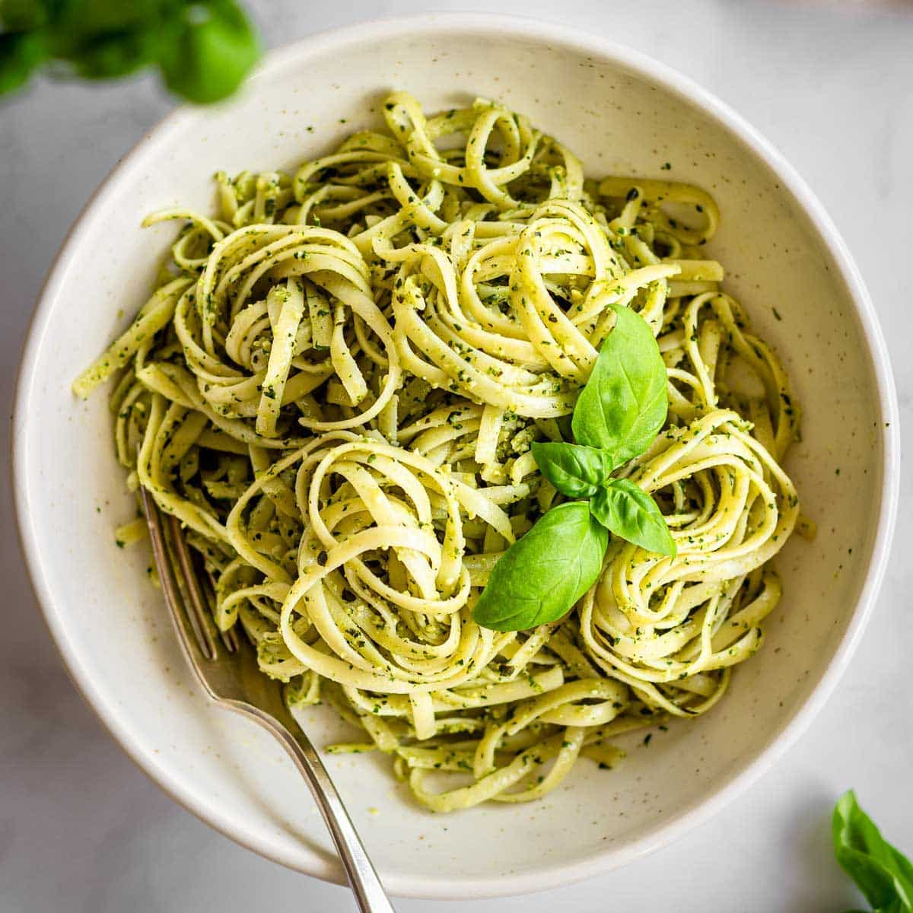

Pasta Pesto

Description
Anyone can make a Pesto Pasta, but not everyone knows how to make a pesto pasta that’s slick with plenty of pesto sauce without adding tons of extra oil! Here’s how I make it.
Try this with homemade pesto. It’s amazing!
Ingredients
- Pasta
- Chicken
- Seasonings
- Olive oil
- Milk
- Parmesan
- Sun dried tomatoes
- Pesto
- Fresh basil leaves
Steps
- Season the chicken. Cut 1 pound of boneless, skinless chicken breasts into 1-inch pieces and add to a large mixing bowl. Next, season the chicken with 1 teaspoon of Italian seasoning and a big pinch each of kosher salt and black pepper. Toss to coat.
- Cook the pasta. Bring a medium pot of water to a boil and salt it well with about 1 tablespoon of salt. Drop the pasta in the boiling water and cook until al dente according to package instructions (about 8 to 9 minutes).
- Cook the chicken. While the pasta is cooking, add the olive oil to a large non-stick pan and heat over medium-high. Add the chicken and cook, tossing occasionally, until golden brown on the outside and cooked through, about 7 to 8 minutes.
- Drain the pasta. When the pasta is ready, reserve about 1 cup of the cooking water and drain.
- Combine. To the pan with the chicken, lower the heat and stir in the cooked pasta, ½ cup of heavy cream, ¼ cup of parmesan, and ¼ cup of sun dried tomatoes. Stir until everything is well combined. If it looks a bit dry, add a splash of the pasta cooking water (a couple of tablespoons at a time) until the pasta is glossy and coated in the creamy sauce.
- Add the pesto. Turn off the heat and take the pan off the burner. Stir in ½ cup of basil pesto. Finish with a sprinkle of grated parmesan, red pepper flakes to taste, and some torn fresh basil leaves. Serve.